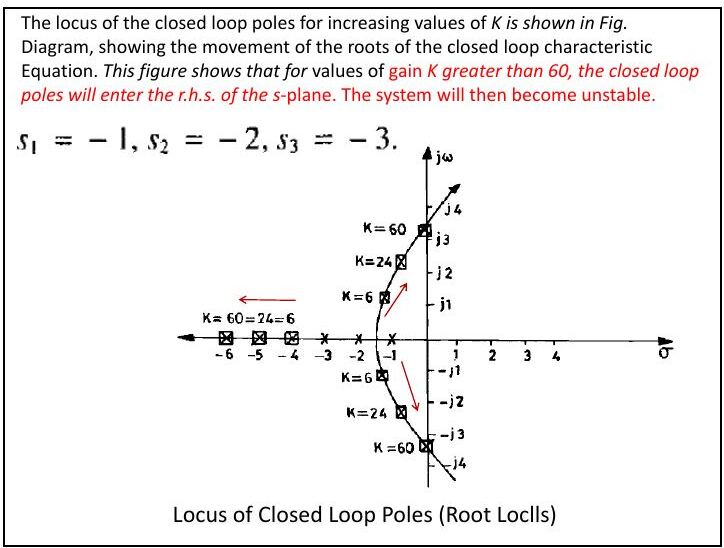
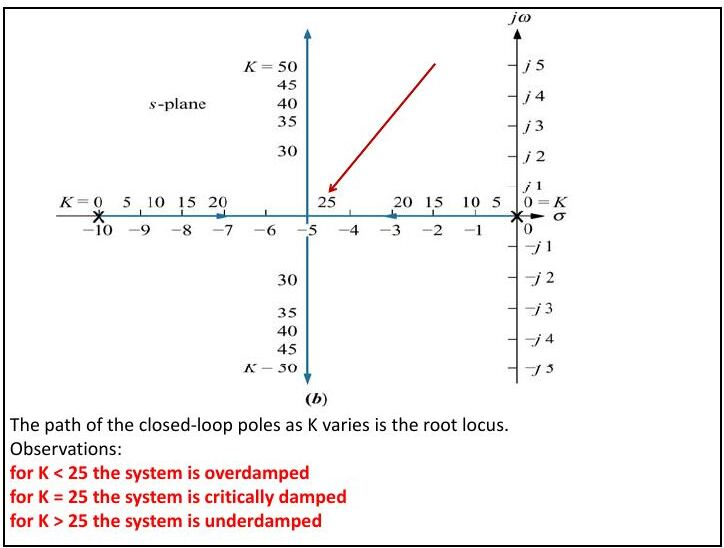
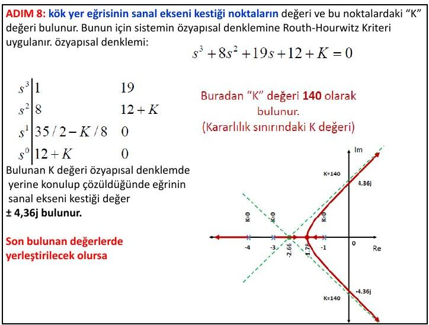
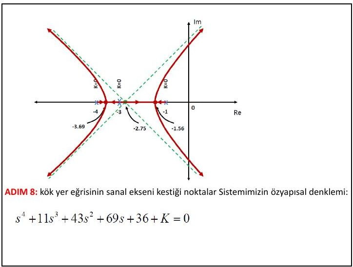
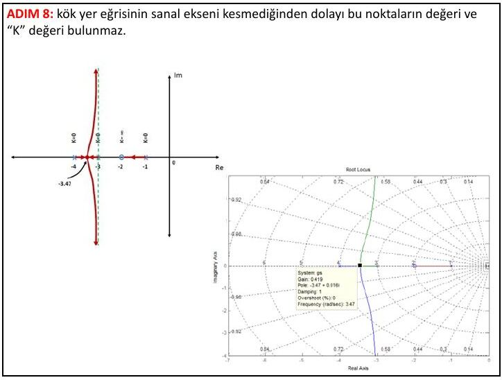
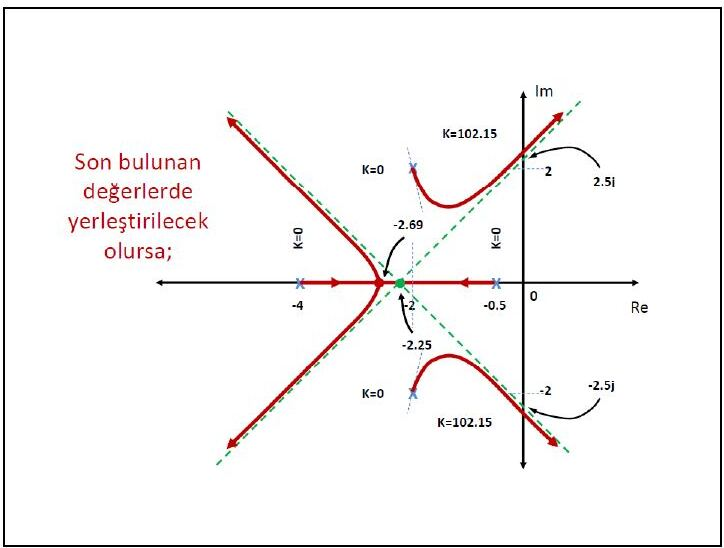

· EEM322
EEM322 Control Systems: Lecture 8 – Root Locus, Angle and Magnitude Conditions, Plotting Steps
EEM322 – Denetim Sistemleri · 26.07.2013 · 16.10.2026
This post collects the lecture 8 notes of the EEM322 Control Systems course at Başkent University: "EEM322L8: Root locus" and "EEM322L8b: Root locus – plotting method and steps". The notes belong to the course instructor Hamit Erdem; the page headers carry the date 26.07.2013. The first is a 10-page PDF written mostly in English, the second a 15-page PDF in Turkish, both with two slides per page; they continue the Lecture 7 notes. The content is transcribed below, with the calculations and root locus plots written out. The original PDFs can be downloaded as a ZIP at the end of the post.
What is the root locus?
For analysis in the frequency domain there are four basic graphical methods: the root locus, Bode diagrams, Nyquist diagrams and Nichols diagrams. The root locus shows the variation of the closed-loop poles: with the characteristic equation of the closed loop being
- 1 + K G(s) = 0
the root locus is the set of paths traced by the roots of this equation as the parameter K is varied from 0 to infinity.
In a system with K and G(s) in the forward path and H(s) in the feedback path, the open-loop transfer function is T₁(s) = K G(s)H(s) and the closed-loop transfer function is T(s) = KG(s)/(1 + KG(s)H(s)). The essence of the control problem is the following:
- The poles of the open-loop transfer function are easily found by looking at the denominator and are not affected by changes in the system gain.
- The poles of the closed-loop transfer function are harder to find and depend on the gain.
The root locus is a graphical method that shows the locations of the closed-loop poles as a system parameter varies; it can be applied to first- and second-order systems as well as to higher-order systems. It gives a qualitative description of system performance, a graphical representation of stability, and the ranges of stability/instability.
Definition: The root locus is the plot showing the locations of the closed-loop roots in the s-plane as the system parameters vary. The transient response characteristics of closed-loop systems depend on the locations of the closed-loop poles; if the system has variable gain, the poles change with the selected gain. Goal: to select suitable poles to obtain the desired system response, and to determine the system gain for those poles.
Example: K/(s(s + 2))
The closed loop is C(s)/R(s) = K/(s(s + 2) + K), the characteristic equation is s² + 2s + K = 0, and the roots are s = −1 ± √(1 − K).
- At K = 0 the closed-loop poles are at the open-loop poles (0 and −2).
- For 0 < K < 1 the poles are on the real axis.
- For K > 1 the poles are complex; the real part is −1 and the imaginary part grows with K. Step responses are plotted for K = 0.5, 1, 2, 15 and 50: as K increases, the overshoot increases.
Example: K/((s + 1)(s + 2)(s + 3))
For the unity-feedback system the open-loop G(s) = K/(s³ + 6s² + 11s + 6) and the characteristic equation is s³ + 6s² + 11s + 6 + K = 0. Since the three poles of the plant (−1, −2, −3) are negative, the system without feedback is stable. As K increases, the closed-loop poles are:
- K = 0: s₁ = −1, s₂ = −2, s₃ = −3 (open-loop poles)
- K = 6: s₁,₂ = −1 ± j√2, s₃ = −4
- K = 24: s₁,₂ = −0.5 ± j√23/2, s₃ = −5
- K = 60: s₁,₂ = ±j√11, s₃ = −6

For K > 60 the closed-loop poles move into the right half-plane and the system becomes unstable.
Example: The CameraMan camera system
In a camera system that automatically tracks a person carrying an infrared sensor, the open loop is G₀(s) = K₁K₂/(s(s + 10)) = K/(s(s + 10)) and the closed loop is G_c(s) = K/(s² + 10s + K). The pole locations as K varies:
| K | Pole 1 | Pole 2 |
|---|---|---|
| 0 | −10 | 0 |
| 5 | −9.47 | −0.53 |
| 10 | −8.87 | −1.13 |
| 15 | −8.16 | −1.84 |
| 20 | −7.24 | −2.76 |
| 25 | −5 | −5 |
| 30 | −5 + j2.24 | −5 − j2.24 |
| 35 | −5 + j3.16 | −5 − j3.16 |
| 40 | −5 + j3.87 | −5 − j3.87 |
| 45 | −5 + j4.47 | −5 − j4.47 |
| 50 | −5 + j5 | −5 − j5 |

Observations: for K < 25 the system is overdamped, at K = 25 it is critically damped, and for K > 25 it is underdamped.
Complex numbers and vector representation
Every complex number σ + jω can be represented by a vector. (s + a) is a complex number and is represented by the vector drawn from the zero of the function at −a to the point s; it can be written in polar form as M∠θ. For example, the function F(s) = s + 7 becomes 12 + j2 at s = 5 + j2.
For F(s) = ∏(s + zᵢ) / ∏(s + pⱼ) (m zeros, n poles), each factor is a vector, and the value of F(s) at any point s is:
- Magnitude: M = |F(s)| = ∏|s + zᵢ| / ∏|s + pⱼ| = (product of zero lengths) / (product of pole lengths)
- Angle: θ = Σ∠(s + zᵢ) − Σ∠(s + pⱼ) = (sum of zero angles) − (sum of pole angles)
Example: For F(s) = (s + 1)/(s(s + 2)) at the point s = −3 + j4:
- Zero at −1: √20∠116.6°; pole at the origin: 5∠126.9°; pole at −2: √17∠104.0°
- |F(s)|∠F(s) = √20/(5√17) ∠(116.6° − 126.9° − 104.0°) = 0.217∠−114.3°
Example: For F(s) = (s + 2)(s + 4)/(s(s + 3)(s + 6)) at the point s = −7 + j9, computed either by direct substitution or with vectors, F(s) = −0.0339 − j0.0899 = 0.096∠−110.7°.
Angle and magnitude conditions
When the denominator of T(s) = KG(s)/(1 + KG(s)H(s)) is zero:
- KG(s)H(s) = −1 = 1∠(2k + 1)180°, k = 0, ±1, ±2, …
The closed-loop poles must satisfy two conditions:
- Magnitude condition: |KG(s)H(s)| = 1 ⇒ K = 1/(|G(s)||H(s)|)
- Angle condition: ∠KG(s)H(s) = (2k + 1)180°
Substituting a value of s into KG(s)H(s) gives a complex number; if its angle is an odd multiple of 180°, that s is a pole of the system for a certain K. Since K is a scalar, the angle condition looks only at G(s)H(s); K is the inverse of the magnitude of G(s)H(s) when the pole location is substituted.
Example: For KG(s)H(s) = K/(s(s + 10)), at K = 5 the closed-loop poles are at −9.47 and −0.53; substituting s = −9.47 and K = 5 gives KG(s)H(s) = −1 (the same result is obtained for the other points in the table).
Example: KG(s)H(s) = K(s + 3)(s + 4)/((s + 1)(s + 2)), with closed loop T(s) = K(s + 3)(s + 4)/[(1 + K)s² + (3 + 7K)s + (2 + 12K)].
- For the point s = −2 + j3, zero angles minus pole angles: θ₁ + θ₂ − θ₃ − θ₄ = 56.31° + 71.57° − 90° − 108.43° = −70.55°. Since this is not an odd multiple of 180°, −2 + j3 is not a closed-loop pole.
- The point s = −2 + j(√2/2), on the other hand, lies on the root locus: K = (product of pole lengths)/(product of zero lengths) = L₃L₄/(L₁L₂) = (√2/2)(1.22)/((2.12)(1.22)) = 0.33.
Root locus plotting steps
The system considered: G(s) = 1/((s + 1)(s + 3)(s + 4)), H(s) = 1. The characteristic equation:
- 1 + K/((s + 1)(s + 3)(s + 4)) = 0 ⇒ s³ + 8s² + 19s + (12 + K) = 0
The notes show the root locations one by one with MATLAB plots for K = 0, 1, 2, 2.11, 5, 15, 45, 140 and 200: two roots meet at −1.78 and leave the real axis, and at K = 140 the locus crosses the imaginary axis at ±j4.36.
- Number of branches: The degree of the characteristic equation (the number of open-loop poles) gives the number of branches; here 3 branches.
- Starting and ending points: The open-loop poles are the starting points (K = 0, marked with "x"), and the zeros are the ending points (K = ∞, marked with "o"). Here there are three poles at −1, −3 and −4, and no zeros.
- Branches on the real axis: Starting to the left of the leftmost pole or zero on the real axis, test points are chosen; if the total number of poles and zeros to the right of the point is odd, the root locus passes through there, and if it is even it does not. Complex poles and zeros are not included in this test. Here the branches lie between −∞ and −4 and between −3 and −1.
- Asymptote angles: α = 180°(2k + 1)/(n − m); for n = 3, m = 0, α = 60°(2k + 1): 60°, 180°, 300°.
- Point where the asymptotes cross the real axis: σ = (Σpᵢ − Σzᵢ)/(n − m) = (−1 − 3 − 4)/3 = −8/3 ≈ −2.66.
- Breakaway point from the real axis: K = −(s³ + 8s² + 19s + 12), dK/ds = −(3s² + 16s + 19) = 0 ⇒ s = −1.78 and s = −3.54. Since −3.54 lies in a region where there is no root locus, the breakaway point is −1.78.
- Departure angles from the poles: The angle condition is applied. For the pole at −4, φ₋₁ + φ₋₃ + φ₋₄ = −180°, here −180 − 180 + φ₋₄ = −180 (angles summing to 360° are ignored) ⇒ φ₋₄ = −180°; similarly φ₋₃ = 0° and φ₋₁ = −180°. Curves meeting at a point move in exactly opposite directions.
- Imaginary-axis crossing: The Routh-Hurwitz criterion is applied:
| Row | 1st column | 2nd column |
|---|---|---|
| s³ | 1 | 19 |
| s² | 8 | 12 + K |
| s¹ | 35/2 − K/8 | 0 |
| s⁰ | 12 + K | 0 |
The value of K = 140, at which the s¹ row is zero, is the stability limit. With this K, 8s² + 152 = 0 ⇒ the locus crosses the imaginary axis at ±j4.36.

Multiple-pole case
G(s) = 1/((s + 1)(s + 3)²(s + 4)), H(s) = 1.
- The number of branches is 4 (the number of open-loop poles).
- There are 4 poles: simple poles at −1 and −4, and a double pole at −3.
- The real-axis branches are between −4 and −3 and between −3 and −1.
- α = 180°(2k + 1)/4 = 45°(2k + 1): 45°, 135°, 225°, 315°.
- σ = (−1 − 3 − 3 − 4)/4 = −11/4 = −2.75.
- K = −(s⁴ + 11s³ + 43s² + 69s + 36); from dK/ds = 0, s₁ = −3.69, s₂ = −3.00 (the pole itself, not possible), s₃ = −1.56. The breakaway points are −3.69 and −1.56.
- Departure angles: φ₋₁ + φ₋₃₁ + φ₋₃₂ + φ₋₄ = −180 ⇒ φ₋₄ = 0°, φ₋₁ = −180°. At the multiple pole the curves move in opposite directions: φ₋₃₁ = −180°, φ₋₃₂ = 0°.
- Routh table for s⁴ + 11s³ + 43s² + 69s + 36 + K = 0:
| Row | 1st column | 2nd column | |
|---|---|---|---|
| s⁴ | 1 | 43 | K + 36 |
| s³ | 11 | 69 | 0 |
| s² | 404/11 | K + 36 | 0 |
| s¹ | 5880/101 − 121K/404 | 0 | 0 |
| s⁰ | K + 36 | 0 | 0 |
From this the stability limit is K = 194.38; from the s² row, the values at which the locus crosses the imaginary axis are found to be ±j2.5.

Case with a zero
G(s) = (s + 2)/((s + 1)(s + 3)(s + 4)), H(s) = 1.
- The number of branches is again 3.
- There are three poles at −1, −3 and −4 (K = 0), and one zero at −2 (K = ∞).
- The real-axis branches are between −4 and −3 and between −2 and −1.
- For n = 3, m = 1, α = 90°(2k + 1): 90° and 270°.
- σ = (−1 − 3 − 4 − (−2))/(3 − 1) = −3.
- K = −(s³ + 8s² + 19s + 12)/(s + 2); from dK/ds = 0, s₁ = −3.47 and s₂,₃ = −1.77 ± j0.79 (not possible). The breakaway point is −3.47.
- Departure and arrival angles: φ₋₁ + φ₋₃ + φ₋₄ − θ₋₂ = −180 ⇒ φ₋₄ = −180°; by similar steps φ₋₃ = −180°, θ₋₂ = 0°, φ₋₁ = −180°.
- Since the root locus does not cross the imaginary axis, these points and the K value are not found; the system is stable for every K.

Complex-pole case
G(s) = 1/((s + 0.5)(s² + 4s + 8)(s + 4)), H(s) = 1.
- The number of branches is 4.
- There are 4 poles: simple poles at −0.5 and −4, and complex poles at −2 ± j2.
- On the real axis there is a branch only between −4 and −0.5 (complex poles and zeros are not counted in this determination).
- α = 45°(2k + 1): 45°, 135°, 225°, 315°.
- σ = (Σpᵢ)/4; the notes obtain (−1 − 4 − 2 − 2)/4 = −9/4 = −2.25.
- K = −(s⁴ + 8.5s³ + 28s² + 44s + 16); from dK/ds = 0, s₁ = −2.69, s₂,₃ = −1.84 ± j0.83 (not possible). The breakaway point is −2.69.
- Departure angles: for the real poles, φ₋₀.₅ = −180° and φ₋₄ = 0°. For the pole at −2 + j2, by the angle rule: [180 − arctan(2/1.5)] + arctan(2/2) + φ₋₂₁ + arctan(4/0) = −180 ⇒ φ₋₂₁ + 126.87 + 45 + 90 = −180 ⇒ φ₋₂₁ = −81.87°, φ₋₂₂ = +81.87°.
- Routh table for s⁴ + 8.5s³ + 28s² + 44s + 16 + K = 0:
| Row | 1st column | 2nd column | |
|---|---|---|---|
| s⁴ | 1 | 28 | K + 16 |
| s³ | 17/2 | 44 | 0 |
| s² | 388/17 | K + 16 | 0 |
| s¹ | 3690/97 − 289K/776 | 0 | 0 |
| s⁰ | K + 16 | 0 | 0 |
The stability limit is K = 102.15; from the s² row, the imaginary-axis crossing is found to be ±j2.28.

Note: In the complex-pole example, the pole at −0.5 is written as −1 in the asymptote centroid calculation. The correct value is σ = (−0.5 − 4 − 2 − 2)/4 = −8.5/4 = −2.125 (this is also consistent with the s³ coefficient 8.5 in the characteristic equation). Also, in the final plot the imaginary-axis crossing is labeled ±2.5j; the value found from the Routh table is ±j2.28 (K + 16 = 118.15 and (388/17)s² + 118.15 = 0 ⇒ s ≈ ±j2.275).